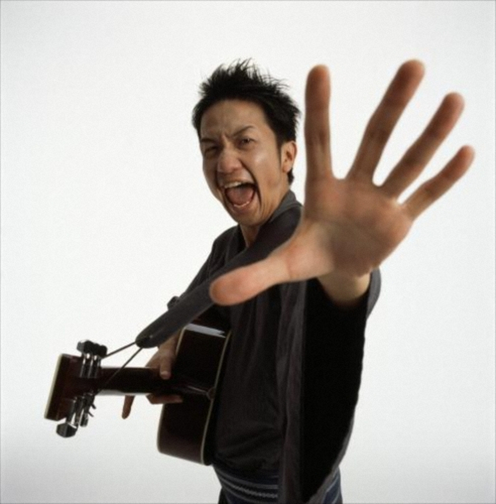

残念！！！
ここは謎解きを間違えた人がたどり着くページです。もう１回考えてみよう！

嘘ついて申し訳ないけど、こういう古典的な隠し芸を１回やってみたかったの！ 開発者モードで秒でバレる１発ギャグでしかないけど…
ともあれヒントを言っておくと、最初の画像のページには4つの「日付・時刻」が隠されてるんだ。
その時刻のSlimySlimeのtraQ投稿の頭文字（ローマ字で入力する時のやつ）をつなぎ合わせると「鍵」が完成するよ。
…鍵って何の鍵かって？知ってるからここに来たんじゃないの？